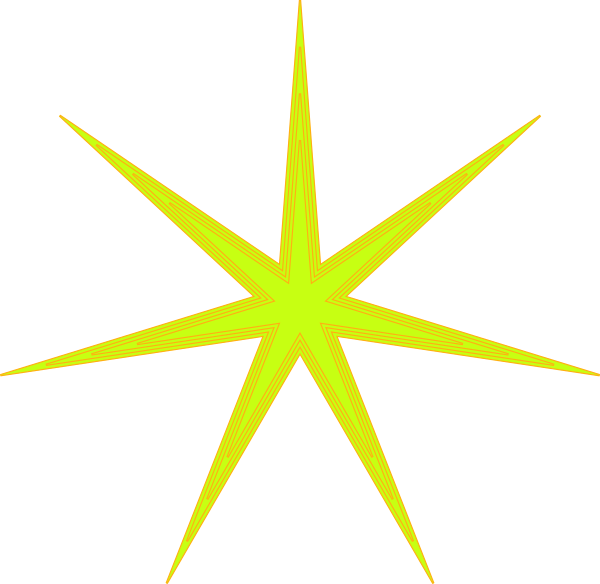

I used all of the transformations such as scale, rotate, skew, and translate. On star one, I combined scale and rotate and it made the star get bigger as it spun. I found that transition-duration affected how fast the animation was executed. Absolute positioning made it so each star could have its own properties that were separate from the general code. Things I changed was the position of the stars. I made them more scattered around the sky.